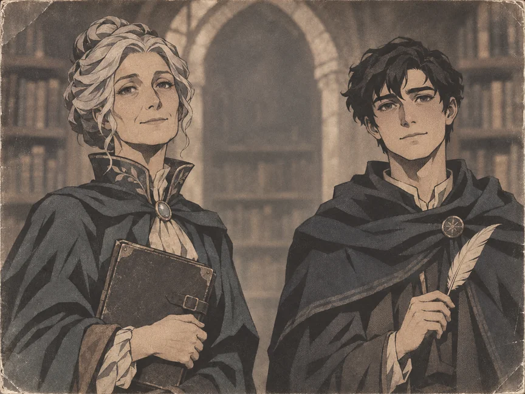

Examine the faded photograph on the central desk.
Free look · Move the pointer to the edge to turn
Erased from the Photograph

Loading the game…
Language changes apply when you next open a level or the main menu.
Clues you examine are recorded here.
All records found.
On a phone, turn the device to landscape.